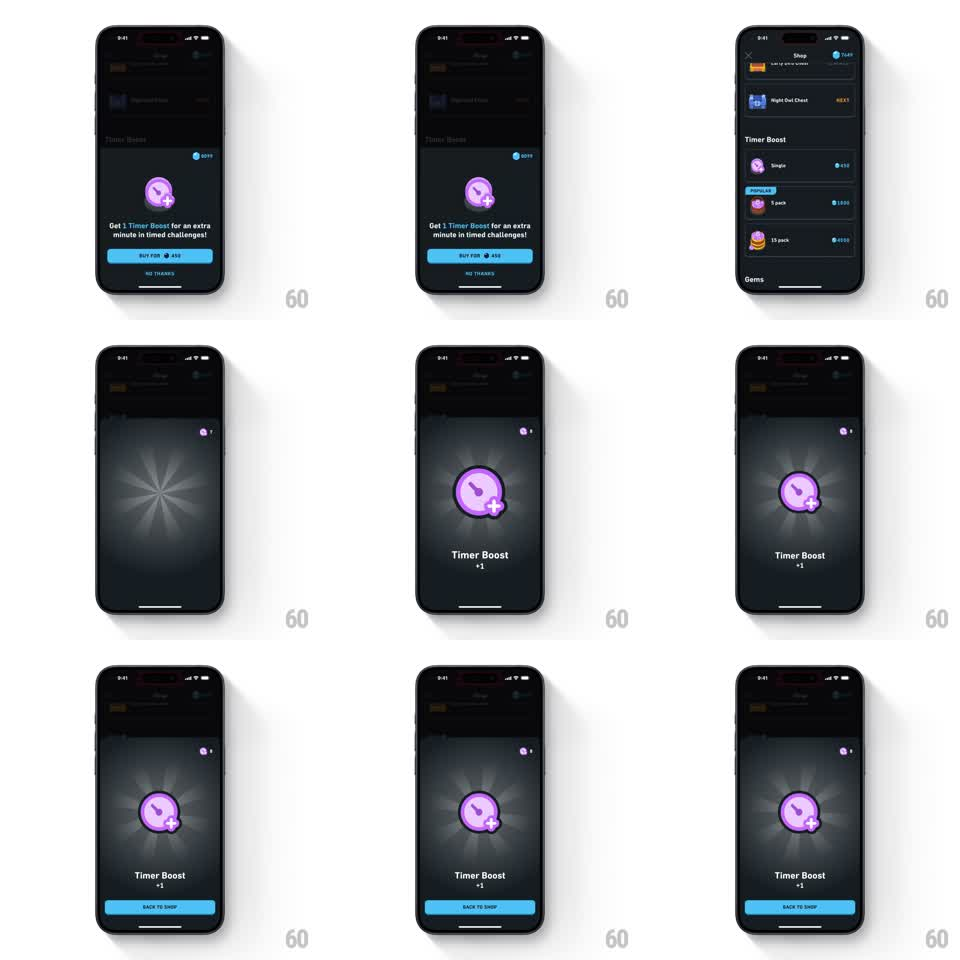

Media
Frame-by-frame

Rebuild this interaction 1:1: Duolingo's Timer Boost purchase - a bottom sheet offers the boost for 450 gems over the dark shop, buying triggers a gem-counter decrement with a flying gem, then a starburst success overlay blooms with the Timer Boost icon and "+1" before a BACK TO SHOP button returns.

Rebuild this interaction 1:1: Duolingo's Timer Boost purchase - a bottom sheet offers the boost for 450 gems over the dark shop, buying triggers a gem-counter decrement with a flying gem, then a starburst success overlay blooms with the Timer Boost icon and "+1" before a BACK TO SHOP button returns. ## Integration Integration: stack-agnostic spec - springs given as stiffness/damping, timed motions as duration + curve; map every value to your framework and animation library of choice. ## Scene Dark shop screen (Night Owl Chest, Timer Boost section with Single / 5 pack POPULAR / 15 pack options, gem balance top-right). The purchase sheet: purple Timer Boost icon, copy "Get 1 Timer Boost for an extra minute in timed challenges!", blue "BUY FOR 450" button with gem icon, NO THANKS link. Success state: radial starburst background, large glowing boost icon, "Timer Boost / +1", blue BACK TO SHOP button. ## Motion spec Pattern: purchase sheet with currency debit and reward burst. - The sheet slides up over a dimmed shop (280ms ease-out, scrim 40%). - BUY tap: button compresses (scale 0.95, 100ms); a gem flies from the button to the top-right counter (400ms arc, ease-in) and the counter decrements 450 with a downward digit roll (250ms) and a brief red flash. - The sheet dissolves into a radial starburst that blooms from center (scale 0 -> 1, 350ms, ease-out, rays rotating slowly 8deg/s). - The boost icon pops in at center (scale 0.5 -> 1.15 -> 1.0, spring ~320/16) with a purple glow; "Timer Boost" and "+1" fade up staggered (150ms apart). - BACK TO SHOP slides up (250ms ease-out); the boost mini-icon settles into the top bar. ## Calibration - The debit happens before the celebration - gems leave, then joy. - The starburst keeps rotating slowly behind the icon; it is ambient, not a one-shot. ## Reduced motion Sheet fades in, counter crossfades to the new value, success overlay fades in without burst; no flights. ## Don't miss - The counter animates DOWN with a red flash - spending must feel different from earning. - The "+1" sits directly under the item name, smaller and quieter than the icon.